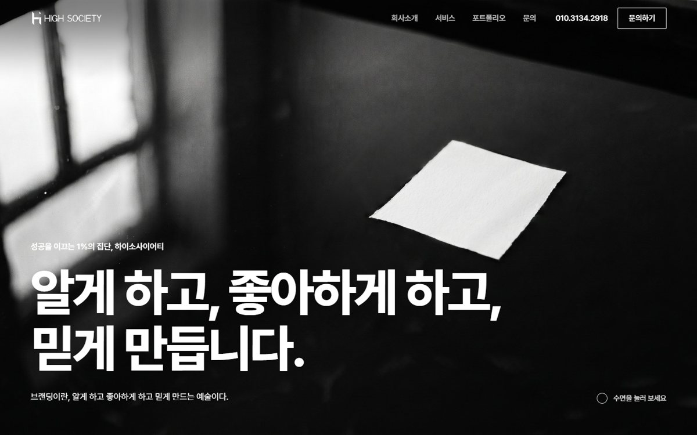
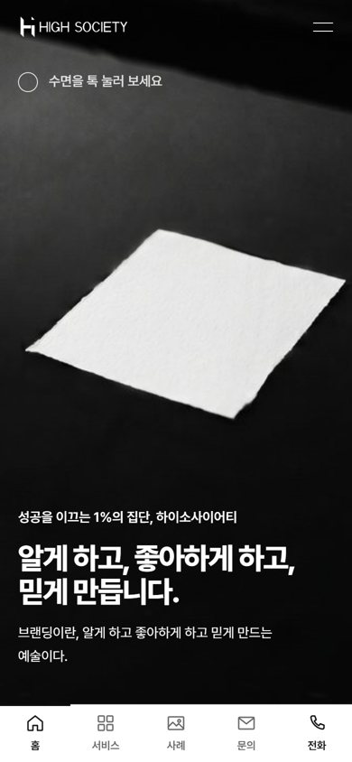

1안 · 알게, 좋아하게, 믿게
검은 수면 위 흰 종이 한 장 — 누르면 물결이 화면 끝까지 번졌다가 잔잔해집니다.
- 결
- 국내 대형 디자인 에이전시 사이트처럼 큰 글자와 넓은 여백의 단정한 흑백
- 손이 닿으면
- 수면 파동 — 누른 자리에서 물결이 퍼지고 첫 화면 사진이 일렁였다 잔잔해집니다. 근거: "소비자들에게 빠르게 확산 시키는 마케팅"
- 잘 맞는 경우
- 기업·기관 광고주에게 믿을 만한 회사로 보여야 할 때